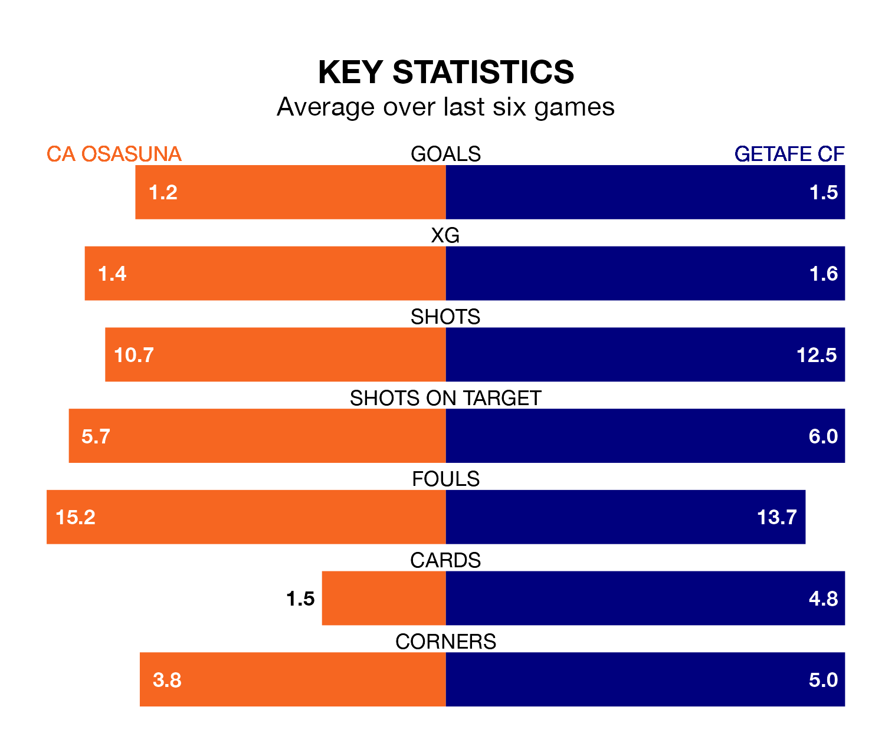

CA Osasuna host Getafe CF on Sunday at the Estadio El Sadar in La Liga.
In their last league match, on January 4, Osasuna beat Almería 1-0 at home, with their goal scored by Ante Budimir.
Getafe lost, 2-0 at home against Rayo Vallecano on January 2.
In Borja Mayoral, Getafe have one of the league's most on-form strikers so far this season. He has notched 12 goals in 19 appearances, to sit second in the scoring charts.
His goal rate of one every 127 minutes is quicker than that of Budimir, Osasuna's top scorer with a goal every 154 minutes, and a total of nine goals in 19 games.
In the last 10 years, Osasuna and Getafe have played each other on 10 occasions. Osasuna won one of them, Getafe five, and they drew four times.
On average, Osasuna scored 0.6 goals and Getafe 1.0 in those matches.
Their last meeting was on September 17, when Getafe won 3-2 at home.
With 22 goals in 19 games so far this season, the home team are scoring at below the league average rate with 1.2 goals per game. And they are conceding more than average, letting in 29 goals at a rate of 1.5 per game.
The visitors, meanwhile, are average scorers, with 1.3 goals per game. They have also conceded 1.3 goals per game.
Osasuna are in mixed form in La Liga, with two wins and two draws from their last six games.
With three wins and a draw over that period, Getafe's form is slightly better – they have taken 10 points from 18, compared to Osasuna's eight.
The hosts are 12th in the table after 19 games, of which they have won six and drawn four, earning 22 points.
Getafe are three places ahead of Osasuna in ninth, with six wins and eight draws putting them on 26 points.
Updated: 11:31, 09/01/24